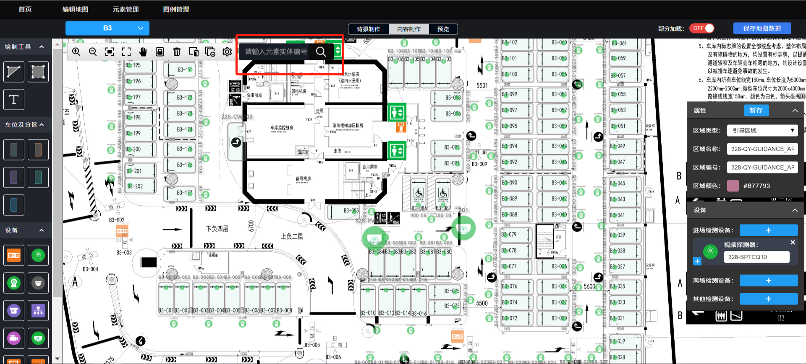

扩展搜索框搜索内容业务说明：
（1）原搜索框只可查询元素实体编号，改为可查找车位编号、车位绑定的设备编号（视频/红外/地磁/PVD的MAC地址和超声波的管理器+探测器序号）、屏编号（组地址+屏地址）、蓝牙ID、进离场检测设备和控灯设备的MAC地址。
（2）精确搜索。如车位001和002绑定视频探测器mac地址2234，识别区分别为0和1，那么搜索2234可直接定位到001和002两个车位，搜索2234-0可定位到001车位。